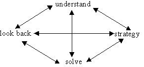

What do you mean by problem-solving?Problem solving is the act of defining a problem; determining the cause of the problem; identifying, prioritizing, and selecting alternatives for a solution; and implementing a solution. The problem-solving process. Problem solving resources.
Four Stages of Problem Solving
- Understand and explore the problem
- Find a strategy
- Use the strategy to solve the problem
- Look back and reflect on the solution
There is no chance of being able to solve a problem unless you are can first understand it. This process requires not only knowing what you have to find but also the key pieces of information that somehow need to be put together to obtain the answer.
Children (and adults too for that matter) will often not be able to absorb all the important information of a problem in one go. It will almost always be necessary to read a problem several times, both at the start and during working on it. During the solution process, children may find that they have to look back at the original question from time to time to make sure that they are on the right track. With younger children it is worth repeating the problem and then asking them to put the question in their own words. Older children might use a highlighter pen to mark and emphasise the most useful parts of the problem.Scientific Approach
Another way of looking at the Problem Solving process is what might be called the scientific approach. We show this in the diagram below.
Here the problem is given and initially the idea is to experiment with it or explore it in order to get some feeling as to how to proceed. After a while it is hoped that the solver is able to make a conjecture or guess what the answer might be. If the conjecture is true it might be possible to prove or justify it. In that case the looking back process sets in and an effort is made to generalise or extend the problem. In this case you have essentially chosen a new problem and so the whole process starts over again.
Sometimes, however, the conjecture is wrong and so a counter-example is found. This is an example that contradicts the conjecture. In that case another conjecture is sought and you have to look for a proof or another counterexample.
Some problems are too hard so it is necessary to give up. Now you may give up so that you can take a rest, in which case it is a ‘for now’ giving up. Actually this is a good problem solving strategy. Often when you give up for a while your subconscious takes over and comes up with a good idea that you can follow. On the other hand, some problems are so hard that you eventually have to give up ‘for ever’. There have been many difficult problems throughout history that mathematicians have had to give up on.
That then is a rough overview of what Problem Solving is all about. For simple problems the four stage Pólya method and the scientific method can be followed through without any difficulty. But when the problem is hard it often takes a lot of to-ing and fro-ing before the problem is finally solved – if it ever is!